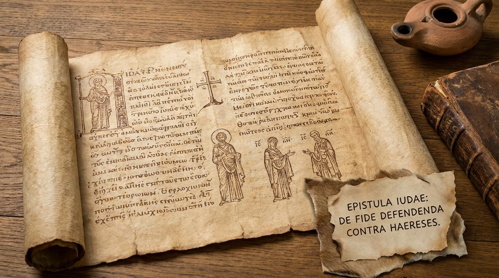

Batalhando pela Fé
A Carta de Judas é uma das mais curtas e contundentes do Novo Testamento. Escrita por Judas, irmão de Tiago e meio-irmão de Jesus, a carta tem um tom de urgência. Ele pretendia escrever sobre a salvação comum, mas sentiu a necessidade de mudar o foco para exortar os crentes a "batalharem pela fé que uma vez por todas foi confiada aos santos". Judas alerta severamente contra homens ímpios que haviam se infiltrado secretamente na igreja, distorcendo a graça de Deus como licença para a imoralidade e rejeitando a autoridade de Cristo. A carta termina com uma das doxologias mais belas e consoladoras de toda a Bíblia.
Ficha Técnica
- Autor: Judas (meio-irmão de Jesus).
- Tema Principal: A necessidade de defender a fé contra o erro e a advertência contra falsos mestres que corrompem a igreja.
- Versículo-Chave: "Amados, embora estivesse muito ansioso por escrever-lhes acerca da salvação que compartilhamos, senti que era necessário escrever-lhes insistindo que batalhassem pela fé uma vez por todas confiada aos santos." (Judas 1:3)
Estrutura
- Saudação e o propósito da carta: batalhar pela fé (Versículos 1-4)
- Exemplos históricos do juízo de Deus sobre os rebeldes (Versículos 5-16)
- Exortações aos fiéis para perseverarem na fé e no amor (Versículos 17-23)
- Doxologia final: a segurança no poder protetor de Deus (Versículos 24-25)